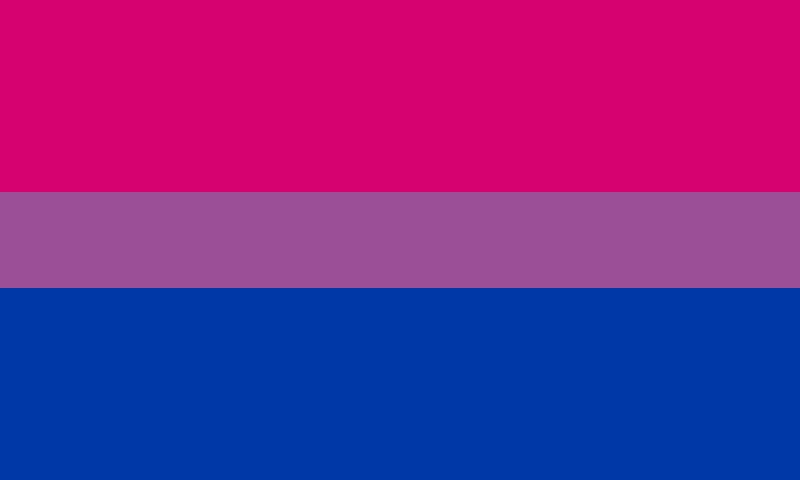

¿Qué es la bisexualidad?
La bisexualidad es una orientación sexual; se define como la atracción romántica, la atracción sexual o la conducta sexual dirigida tanto hacia el sexo opuesto como hacia el sexo propio, o bien como la atracción romántica o sexual hacia personas de cualquier sexo o identidad de género. Si bien, para esta última definición se suele usar alternativamente el término ‘pansexualidad’, concepto que en determinados contextos es usado de manera intercambiable con ‘bisexualidad’, aunque para otros se trata de dos orientaciones o identidades distintas.
(Haz click en la imagen para obtener más información)
